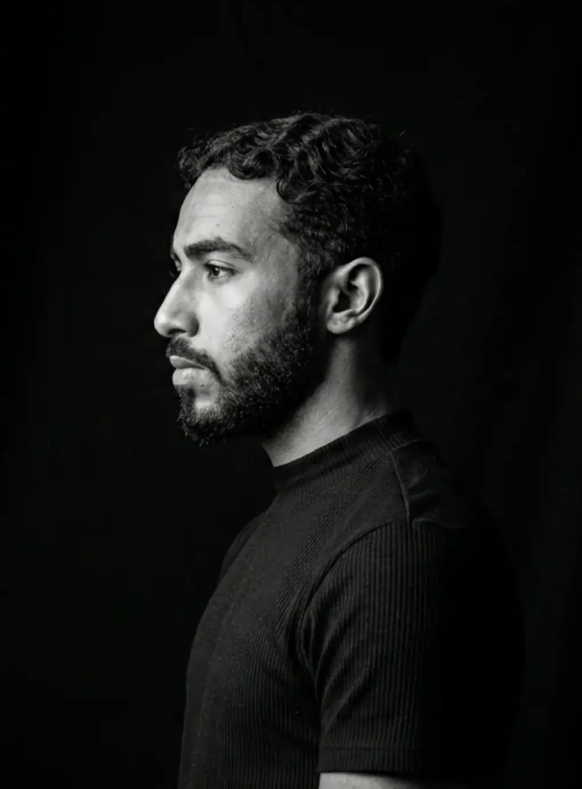
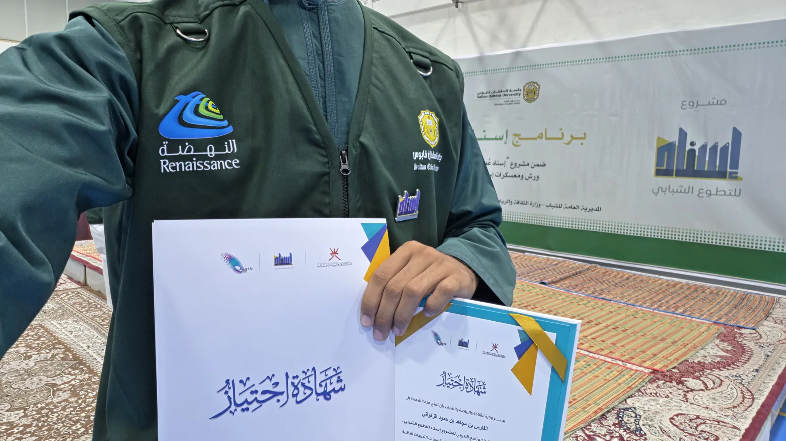
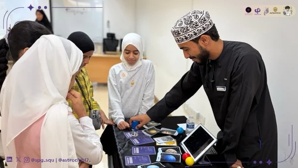
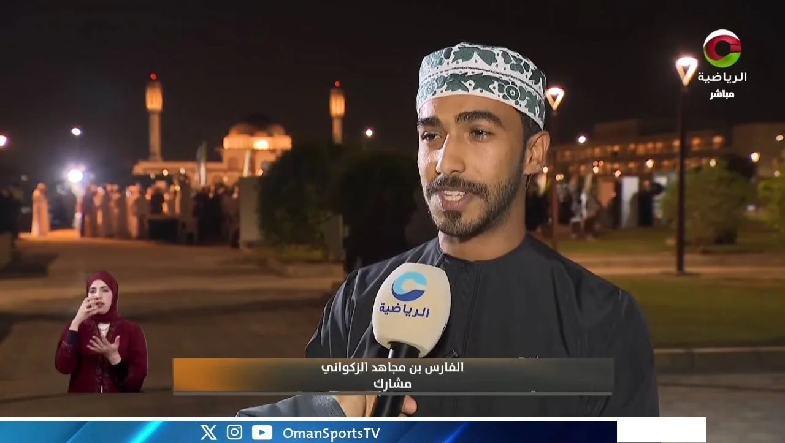
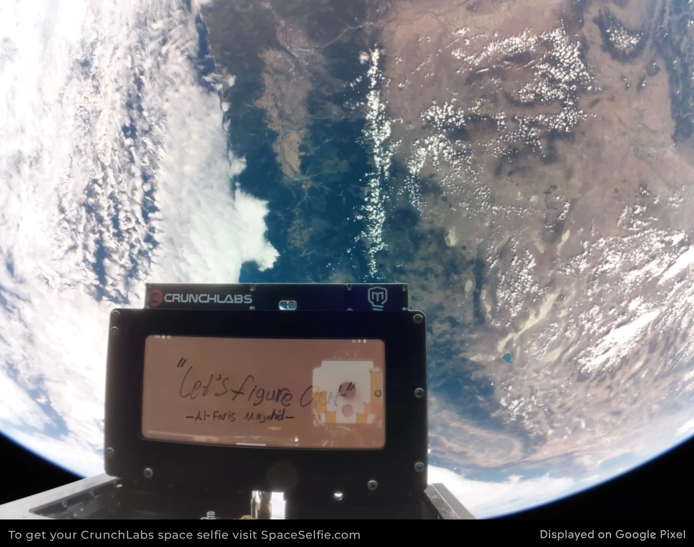
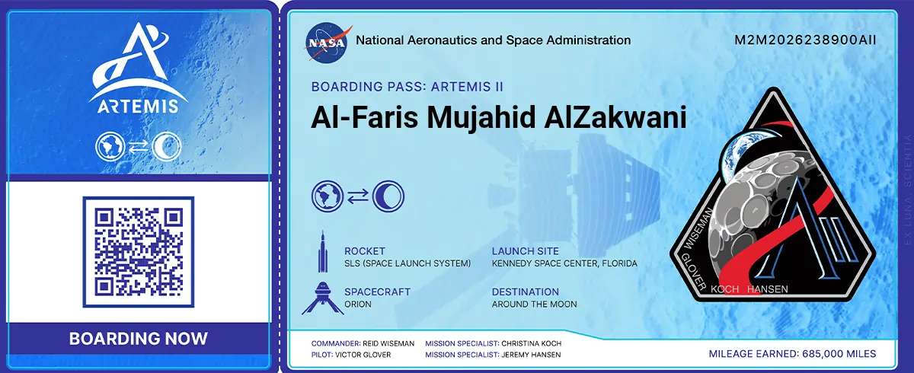
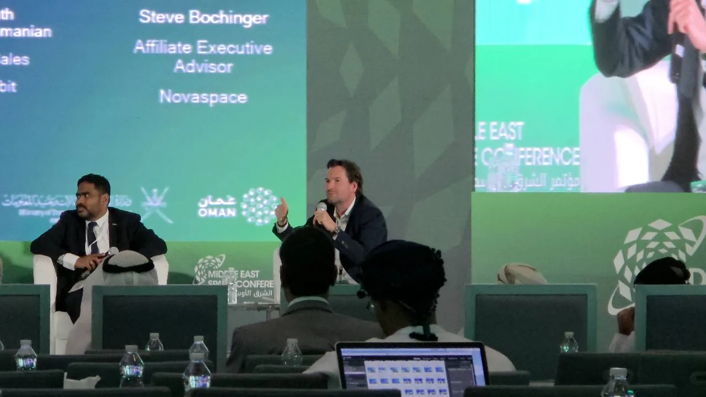
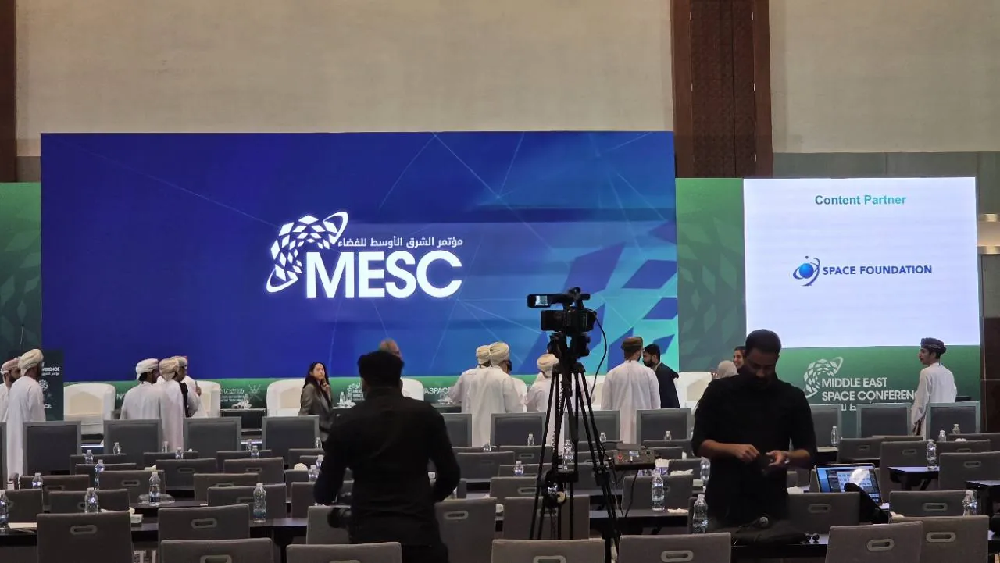
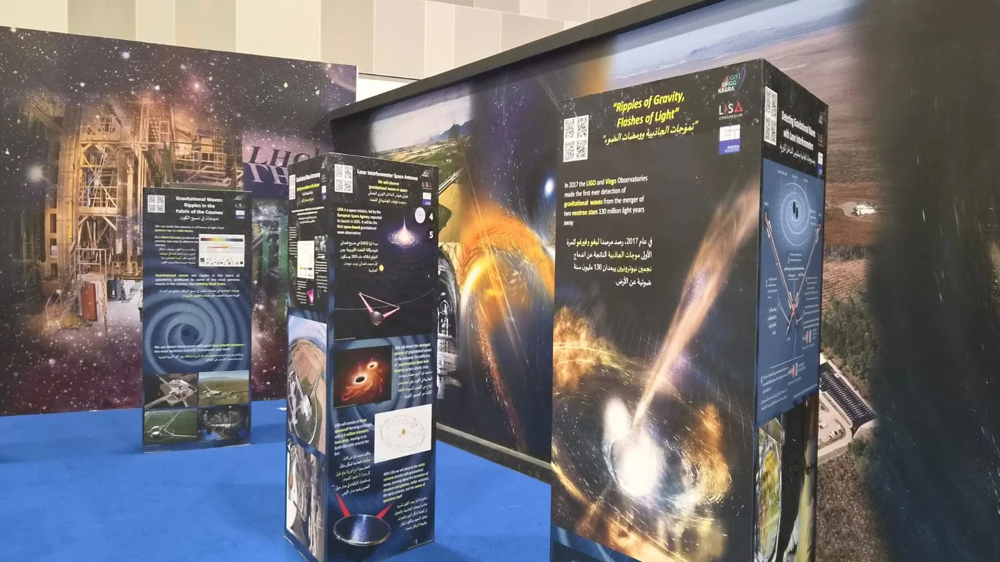
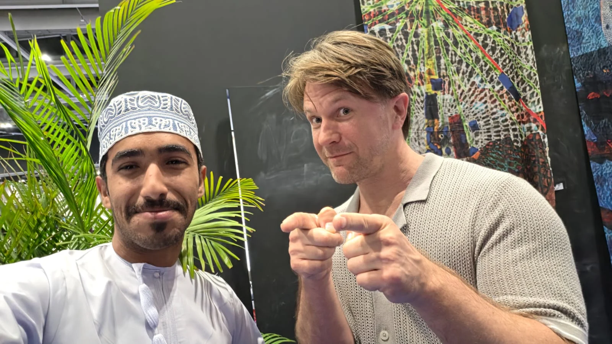

My Portfolio
I designed and built this portfolio in HTML, CSS and JavaScript, including a reduced-motion experience for its orbital visuals.
FIELD JOURNAL
Al-Faris Mujahid Hamood AlZakwani
I study at Sultan Qaboos University in Oman and founded NexCore Labs, a bilingual student platform. I contributed to the front-end engineering of VitalX, an astronaut health-monitoring proposal.
My long-term goal is to apply physics and software to human spaceflight.

I designed and built this portfolio in HTML, CSS and JavaScript, including a reduced-motion experience for its orbital visuals.
I built a 3D simulator for a Sultan Qaboos University student team exploring smart agricultural tiles. Adjust solar intensity to see how the model changes the temperature difference and estimated power. The model assumes an ambient range of 28–42 °C and estimates power using a simplified curve proportional to the square of the temperature difference. Physical tile performance would require testing. I later resigned to focus on other fields.
I founded NexCore Labs, an independent student platform in Arabic and English. Students can discover projects through the Project Hub and share ideas through the Contributor Center. For v3.3.0, I fixed the release timeline so readers could see complete release details in both languages and added browser regression coverage.
I contributed front-end development to Team Novacare’s proposed astronaut health-monitoring tool at the 2026 NASA Space Apps Challenge in Bidiyah. I received the Galactic Problem Solver participation certificate.
I developed a company website where customers can browse cement products and approvals, find the company’s location and contact the team.
I built the Arabic-language website for Scorleaf, an Omani student health startup. The site introduces the team, its product concept and how to get in touch.
I built an education website for student academic and self-development resources using HTML, CSS and JavaScript.
I am working with my father and family to establish a venture focused on using AI and other technology to solve practical problems.
Worked with customers and handled technical equipment in sales and support at my father's company.
Selected as a member and delivered HTML and CSS workshops through the Open Source Initiative.
Visited the conference in Muscat at the Oman Convention and Exhibition Centre, connected with space-sector startups, companies, and ambitious peers, and asked a recorded question during an open dialogue with international space experts.
Explored modern-physics exhibits at the fifth Oman Science Festival at OCEC, including gravitational waves, black holes, and laser interferometry, and connected with a visiting science presenter.
Contributed front-end development to VitalX with Team Novacare in Bidiyah and received the Galactic Problem Solver participation certificate.
Participated as an instructor at the Astronomy Club station during the sixth Little Einstein event, organized by the Physics Group in collaboration with the Astronomy Club, giving astronomy presentations to children across different age groups over two days.
Completed a training camp hosted by Sultan Qaboos University and offered by the Ministry of Culture, Sports and Youth, including 20 hours of workshops followed by direct practical application with young people from Al Rahma Association.
At the University of Technology and Applied Sciences in Ibra, our platform team proposed a way to support students from entry through graduation. We did not win.
In my second year at SQU, nominated for President of the Astronomy Club of the Physics Group in the Faculty of Science, and Head of the Technology and Workshops Committee of the History and Archaeology Group in the Faculty of Arts.

A volunteer-services training camp hosted by Sultan Qaboos University and offered by the Ministry of Culture, Sports and Youth. After 20 hours of workshops, I joined direct practical application with young people from Al Rahma Association.

Served as an instructor at the Astronomy Club station during the two-day Little Einstein event. I presented astronomy concepts to children across several age groups and received a participation certificate.

I represented the Astronomy Club in an Oman Sports TV interview during Sultan Qaboos University’s Sports Village event at Al Andalus Garden. The club organized Astra, an outdoor stargazing event, and I spoke about the club and its activities.
–present · College of Science, Oman
HTML, CSS, JavaScript, responsive design, Git and GitHub
Understanding how bodies move, transfer, decay, rendezvous, and survive inside real mission constraints.
Studying thrust, staging, fuel choices, launch profiles, and why every kilogram changes the equation.
Learning the mindset behind crewed missions: discipline, communication, physical readiness, systems knowledge, and trust.
Following mission architectures, surface operations, spacecraft interfaces, and the long arc of humanity beyond Earth.

A personal space photo taken through the CrunchLabs satellite , carrying my message above Earth.

A symbolic Artemis II boarding pass from NASA's Moon to Mars participation campaign, connecting my learning path to the next era of lunar exploration.
Visited the Middle East Space Conference at the Oman Convention and Exhibition Centre, met space-sector startups, leading companies, and people who share my ambitions, then spoke during the open dialogue with international space experts.
Watch on YouTube



Visited the fifth Oman Science Festival at the Oman Convention and Exhibition Centre, exploring the physics sector through hands-on displays about gravitational waves, black holes, and laser interferometry. The visit was a useful reminder that big scientific ideas become more powerful when they can be seen, discussed, and shared.
2–11 November 2026 · “Science is Our Compass”
Read the Ministry of Education event update


At the 2026 NASA Space Apps Challenge in Bidiyah, I contributed front-end development and AI-assisted problem-solving to Team Novacare’s proposal for astronaut health monitoring.
14–15 November 2026 · Galactic Problem Solver participation certificate
I am studying orbital mechanics and debris mitigation, with an initial focus on how objects in low Earth orbit lose altitude.
Over time, I want to build tools for space research and contribute to human spaceflight.
CERTIFICATION ARCHIVE
Development learning track · Feb 2021
SQU Open Source Group · 2025
INJAZ Oman · Feb 2024
INJAZ Al-Arab & Boeing · Feb 2025
Google · Apr 2024
Coursera · Nov 2025
Coursera · Nov 2025
Coursera · Nov 2025
IDP · Test date: Jul 26, 2025
Overall 5.5 · Listening 5.5 · Reading 5.5 · Writing 5.5 · Speaking 5.0
View redacted IDP results screenshot ↗Physics Group & Astronomy Club · Sultan Qaboos University · 2026-2027 academic year
Ministry of Culture, Sports and Youth · Sultan Qaboos University · 20 training hours · 2026
University of Technology and Applied Sciences, Ibra · Platform team · 28 Jun 2026
Sultan Qaboos University · Oct 2025
Talent Discovery programme · Sep 2021
Talent Discovery programme · Feb 2023
Typing.com · Jun 2023
Typing.com · Jun 2023
Typing.com · Jun 2023
Typing.com · Jun 2023
Typing.com · Jun 2023
Typing.com · Jun 2023
Galactic Problem Solver participation certificate · Nov 14–15, 2026 · Novacare
Galactic Problem Solver · Oct 6–8, 2023
Sultan Qaboos University · Department of Electrical & Computer Engineering · Dec 4, 2025
I welcome conversations about front-end internships, scientific software, and undergraduate research in physics or space technology.